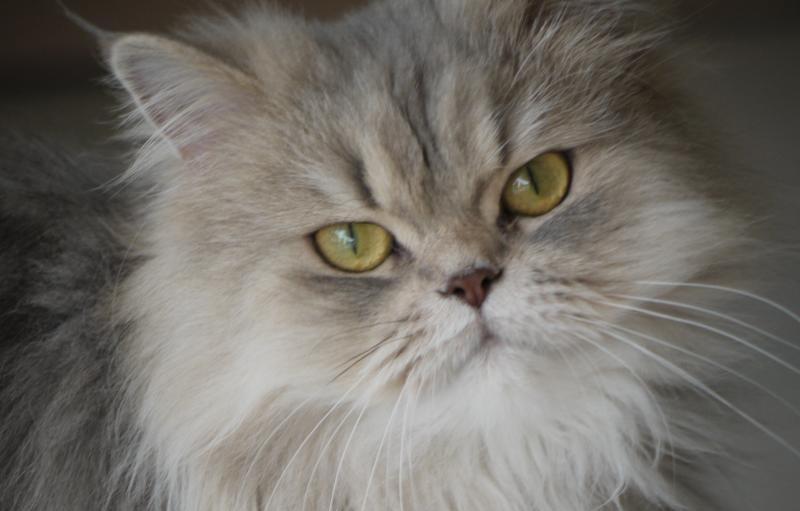

Top 10 Razas de Gatos más Famosas
-
Gato persa: Un conquistador por excelencia
 -
Siamés: El más cariñoso de todos

-
Gato ruso azul: Pura elegancia
-
Bobtail americano: Siempre dispuesto para jugar
-
Somalí: Enigmático y distinguido
-
Siberiano: La mirada más salvaje y cautivadora
-
Ragdoll: El dulce muñeco de trapo

-
Maine coon: Un hermoso gigante
-
Manés o manx: El adorable gato sin cola
-
Birmano o burmés: Un felino muy sociable